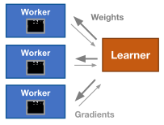

Learning to Play Pong
Contents
Learning to Play Pong#
Tip
For a production-grade implementation of distributed reinforcement learning, use Ray RLlib.
In this example, we’ll train a very simple neural network to play Pong using Gymnasium.
At a high level, we will use multiple Ray actors to obtain simulation rollouts and calculate gradient simultaneously. We will then centralize these gradients and update the neural network. The updated neural network will then be passed back to each Ray actor for more gradient calculation.
This application is adapted, with minimal modifications, from Andrej Karpathy’s source code (see the accompanying blog post).
To run the application, first install some dependencies.
pip install gymnasium[atari] gym==0.26.2
At the moment, on a large machine with 64 physical cores, computing an update with a batch of size 1 takes about 1 second, a batch of size 10 takes about 2.5 seconds. A batch of size 60 takes about 3 seconds. On a cluster with 11 nodes, each with 18 physical cores, a batch of size 300 takes about 10 seconds. If the numbers you see differ from these by much, take a look at the Troubleshooting section at the bottom of this page and consider submitting an issue.
Note that these times depend on how long the rollouts take, which in turn depends on how well the policy is doing. For example, a really bad policy will lose very quickly. As the policy learns, we should expect these numbers to increase.
import numpy as np
import os
import ray
import time
import gymnasium as gym
Hyperparameters#
Here we’ll define a couple of the hyperparameters that are used.
H = 200 # The number of hidden layer neurons.
gamma = 0.99 # The discount factor for reward.
decay_rate = 0.99 # The decay factor for RMSProp leaky sum of grad^2.
D = 80 * 80 # The input dimensionality: 80x80 grid.
learning_rate = 1e-4 # Magnitude of the update.
Helper Functions#
We first define a few helper functions:
Preprocessing: The
preprocessfunction will preprocess the original 210x160x3 uint8 frame into a one-dimensional 6400 float vector.Reward Processing: The
process_rewardsfunction will calculate a discounted reward. This formula states that the “value” of a sampled action is the weighted sum of all rewards afterwards, but later rewards are exponentially less important.Rollout: The
rolloutfunction plays an entire game of Pong (until either the computer or the RL agent loses).
def preprocess(img):
# Crop the image.
img = img[35:195]
# Downsample by factor of 2.
img = img[::2, ::2, 0]
# Erase background (background type 1).
img[img == 144] = 0
# Erase background (background type 2).
img[img == 109] = 0
# Set everything else (paddles, ball) to 1.
img[img != 0] = 1
return img.astype(np.float).ravel()
def process_rewards(r):
"""Compute discounted reward from a vector of rewards."""
discounted_r = np.zeros_like(r)
running_add = 0
for t in reversed(range(0, r.size)):
# Reset the sum, since this was a game boundary (pong specific!).
if r[t] != 0:
running_add = 0
running_add = running_add * gamma + r[t]
discounted_r[t] = running_add
return discounted_r
def rollout(model, env):
"""Evaluates env and model until the env returns "Terminated" or "Truncated".
Returns:
xs: A list of observations
hs: A list of model hidden states per observation
dlogps: A list of gradients
drs: A list of rewards.
"""
# Reset the game.
observation, info = env.reset()
# Note that prev_x is used in computing the difference frame.
prev_x = None
xs, hs, dlogps, drs = [], [], [], []
terminated = truncated = False
while not terminated and not truncated:
cur_x = preprocess(observation)
x = cur_x - prev_x if prev_x is not None else np.zeros(D)
prev_x = cur_x
aprob, h = model.policy_forward(x)
# Sample an action.
action = 2 if np.random.uniform() < aprob else 3
# The observation.
xs.append(x)
# The hidden state.
hs.append(h)
y = 1 if action == 2 else 0 # A "fake label".
# The gradient that encourages the action that was taken to be
# taken (see http://cs231n.github.io/neural-networks-2/#losses if
# confused).
dlogps.append(y - aprob)
observation, reward, terminated, truncated, info = env.step(action)
# Record reward (has to be done after we call step() to get reward
# for previous action).
drs.append(reward)
return xs, hs, dlogps, drs
Neural Network#
Here, a neural network is used to define a “policy” for playing Pong (that is, a function that chooses an action given a state).
To implement a neural network in NumPy, we need to provide helper functions for calculating updates and computing the output of the neural network given an input, which in our case is an observation.
class Model(object):
"""This class holds the neural network weights."""
def __init__(self):
self.weights = {}
self.weights["W1"] = np.random.randn(H, D) / np.sqrt(D)
self.weights["W2"] = np.random.randn(H) / np.sqrt(H)
def policy_forward(self, x):
h = np.dot(self.weights["W1"], x)
h[h < 0] = 0 # ReLU nonlinearity.
logp = np.dot(self.weights["W2"], h)
# Softmax
p = 1.0 / (1.0 + np.exp(-logp))
# Return probability of taking action 2, and hidden state.
return p, h
def policy_backward(self, eph, epx, epdlogp):
"""Backward pass to calculate gradients.
Arguments:
eph: Array of intermediate hidden states.
epx: Array of experiences (observations).
epdlogp: Array of logps (output of last layer before softmax).
"""
dW2 = np.dot(eph.T, epdlogp).ravel()
dh = np.outer(epdlogp, self.weights["W2"])
# Backprop relu.
dh[eph <= 0] = 0
dW1 = np.dot(dh.T, epx)
return {"W1": dW1, "W2": dW2}
def update(self, grad_buffer, rmsprop_cache, lr, decay):
"""Applies the gradients to the model parameters with RMSProp."""
for k, v in self.weights.items():
g = grad_buffer[k]
rmsprop_cache[k] = decay * rmsprop_cache[k] + (1 - decay) * g ** 2
self.weights[k] += lr * g / (np.sqrt(rmsprop_cache[k]) + 1e-5)
def zero_grads(grad_buffer):
"""Reset the batch gradient buffer."""
for k, v in grad_buffer.items():
grad_buffer[k] = np.zeros_like(v)
Parallelizing Gradients#
We define an actor, which is responsible for taking a model and an env and performing a rollout + computing a gradient update.
# This forces OpenMP to use 1 single thread, which is needed to
# prevent contention between multiple actors.
# See https://docs.ray.io/en/latest/ray-core/configure.html for
# more details.
os.environ["OMP_NUM_THREADS"] = "1"
# Tell numpy to only use one core. If we don't do this, each actor may
# try to use all of the cores and the resulting contention may result
# in no speedup over the serial version. Note that if numpy is using
# OpenBLAS, then you need to set OPENBLAS_NUM_THREADS=1, and you
# probably need to do it from the command line (so it happens before
# numpy is imported).
os.environ["MKL_NUM_THREADS"] = "1"
ray.init()
@ray.remote
class RolloutWorker(object):
def __init__(self):
self.env = gym.make("GymV26Environment-v0", env_id="ALE/Pong-v5")
def compute_gradient(self, model):
# Compute a simulation episode.
xs, hs, dlogps, drs = rollout(model, self.env)
reward_sum = sum(drs)
# Vectorize the arrays.
epx = np.vstack(xs)
eph = np.vstack(hs)
epdlogp = np.vstack(dlogps)
epr = np.vstack(drs)
# Compute the discounted reward backward through time.
discounted_epr = process_rewards(epr)
# Standardize the rewards to be unit normal (helps control the gradient
# estimator variance).
discounted_epr -= np.mean(discounted_epr)
discounted_epr /= np.std(discounted_epr)
# Modulate the gradient with advantage (the policy gradient magic
# happens right here).
epdlogp *= discounted_epr
return model.policy_backward(eph, epx, epdlogp), reward_sum
Running#
This example is easy to parallelize because the network can play ten games in parallel and no information needs to be shared between the games.
In the loop, the network repeatedly plays games of Pong and records a gradient from each game. Every ten games, the gradients are combined together and used to update the network.
iterations = 20
batch_size = 4
model = Model()
actors = [RolloutWorker.remote() for _ in range(batch_size)]
running_reward = None
# "Xavier" initialization.
# Update buffers that add up gradients over a batch.
grad_buffer = {k: np.zeros_like(v) for k, v in model.weights.items()}
# Update the rmsprop memory.
rmsprop_cache = {k: np.zeros_like(v) for k, v in model.weights.items()}
for i in range(1, 1 + iterations):
model_id = ray.put(model)
gradient_ids = []
# Launch tasks to compute gradients from multiple rollouts in parallel.
start_time = time.time()
gradient_ids = [actor.compute_gradient.remote(model_id) for actor in actors]
for batch in range(batch_size):
[grad_id], gradient_ids = ray.wait(gradient_ids)
grad, reward_sum = ray.get(grad_id)
# Accumulate the gradient over batch.
for k in model.weights:
grad_buffer[k] += grad[k]
running_reward = (
reward_sum
if running_reward is None
else running_reward * 0.99 + reward_sum * 0.01
)
end_time = time.time()
print(
"Batch {} computed {} rollouts in {} seconds, "
"running mean is {}".format(
i, batch_size, end_time - start_time, running_reward
)
)
model.update(grad_buffer, rmsprop_cache, learning_rate, decay_rate)
zero_grads(grad_buffer)